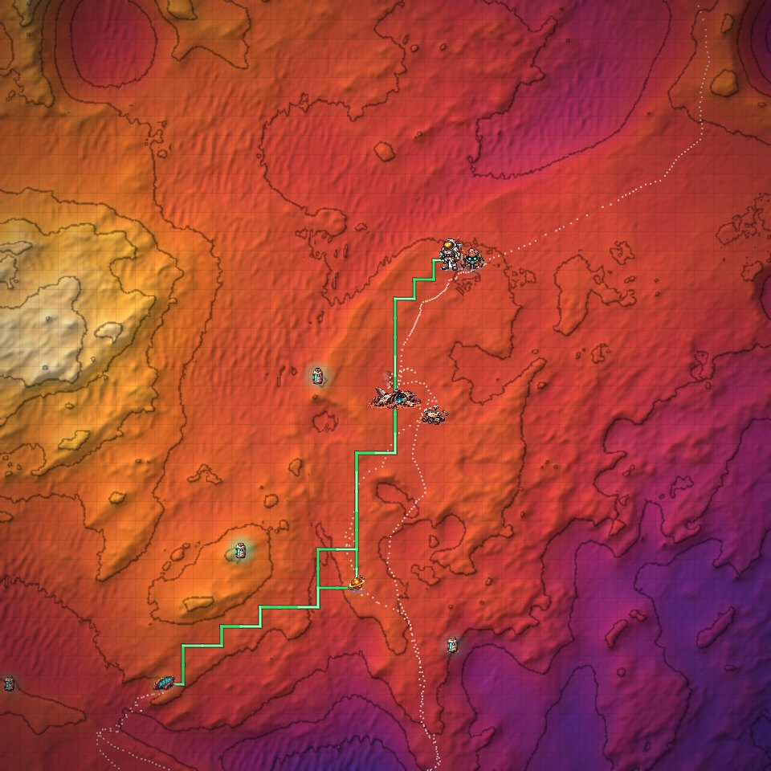

NASA data
Every tile comes from a NASA product. Nothing is made up.
| In the game | Real data | Source |
|---|---|---|
| Slope, height, rock walls, 3D terrain | HiRISE Digital Terrain Model, 1 m/pixel | MRO HiRISE · USGS Astrogeology |
| Firm rock or soft sand | THEMIS night-time infrared mosaic, 100 m/pixel | Mars Odyssey · NASA Mars Trek |
| Photo layer, board colours, site close-ups | HiRISE orthomosaic, 25 cm/pixel | NASA Mars Trek |
| The rover's path and stops | Mars 2020 localisation (waypoints, traverse) | NASA/JPL-Caltech |
| Photo shown at each ship piece | Perseverance Navcam raw images | NASA/JPL-Caltech |
The board is a 1.6 km × 1.52 km window centred on Perseverance's landing site (18.4447° N, 77.4508° E), 40 × 40 tiles. Our tools stream only this window from NASA servers; the repository rebuilds it with three commands.


4 / 7